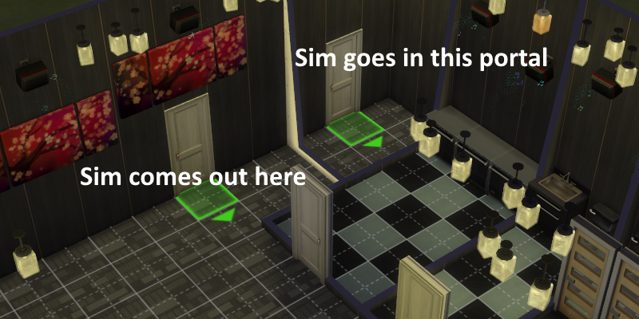
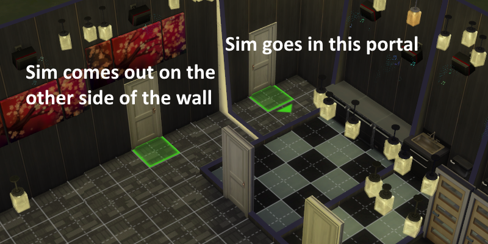
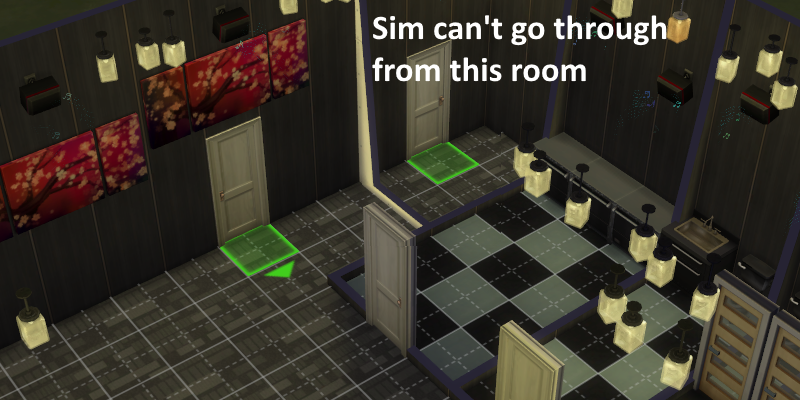

Adds a new door object called Portal Door Plain. With two or more placed, sims can path through them (regardless of distance, floors, etc.) to get where they need to be faster.
Latest: V1.2d, released after EA Patch, November 10, 2020
This mod adds new objects to build mode under Doors. They are visually doors, but act as portals to move between rather than the normal functionality.
As you can see from the examples, sims should generally be smart enough to choose whatever portal will get them where they're going the fastest, if a portal is available to do so (even if you've ordered them where to go). I can't take any credit for this aspect of it; it's baked into the design of the portal logic that I used.
Portals can be locked or unlocked with the same options that doors have. They can't, however, act as the front door (e.g. the door visiting sims would come to, that sort of thing). I'm pretty sure I could allow them to be, but I think it would be too messy, considering you need to have at least two portals placed for them to even work and I want to minimize confusion.
You can choose from a variety of door variations: As of writing this note, the options include a copy of every base game door and its swatches.
If you're having issues with your sims claiming they can't get in or out of an area using your portals, make sure the portals are facing the correct way.
Like normal doors, you can right-click with them selected in build mode to change what direction they are facing. Whatever direction the arrow is facing in, sims can travel through, or exit from, the door on that end. They can't travel through or exit from the other direction.
Here's some illustrations to help show what I mean:
  This isn't one of those warnings where you need to turn around and run in the other direction. It's just one stipulation to be mindful of. The portal logic I used utilizes a tag from one of the Jungle Adventure portal type jungle door thingies. This means almost nothing, surprisingly, and you don't need Jungle Adventure for this mod to work (I tested with it disabled).
What it does mean is you should be wary of setting up these portals on any of the lots that contain the Jungle Adventure portal type door thingies. It shouldn't break your game or anything, it just may cause your sim to not always quite go where they are expected to go on that lot, i.e. may screw with your experience in trying to get through the portal type jungle door thingies as expected.
If you were to do this on accident, it shouldn't have any kind of permanent effect; as soon as you removed the door portals, any issues getting around should go away.
Thus... "mild" warning.